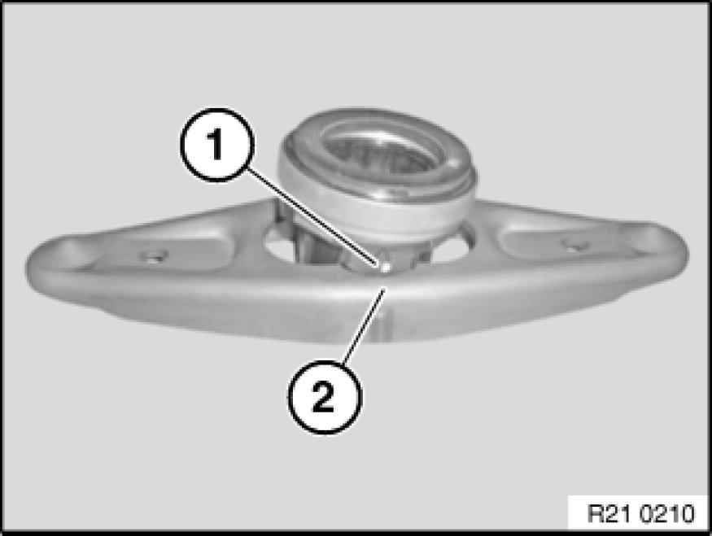
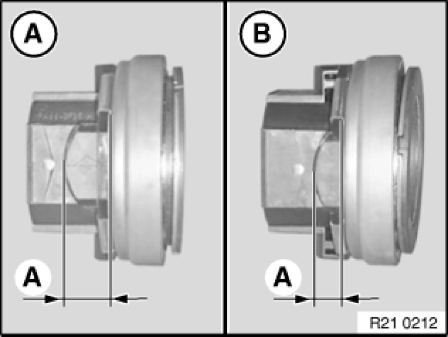
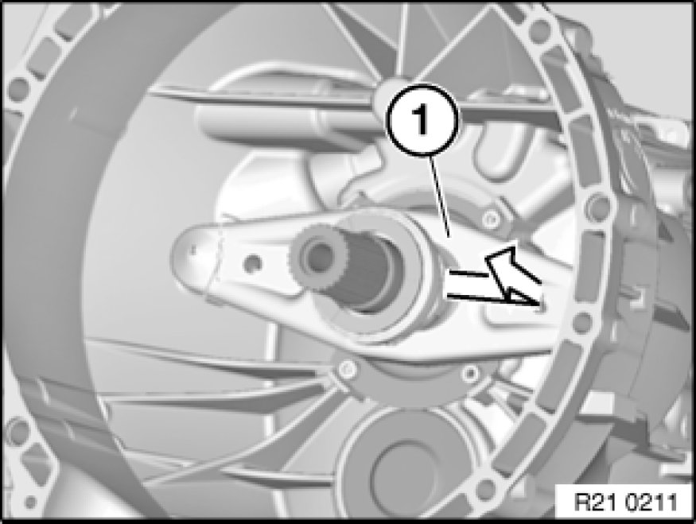
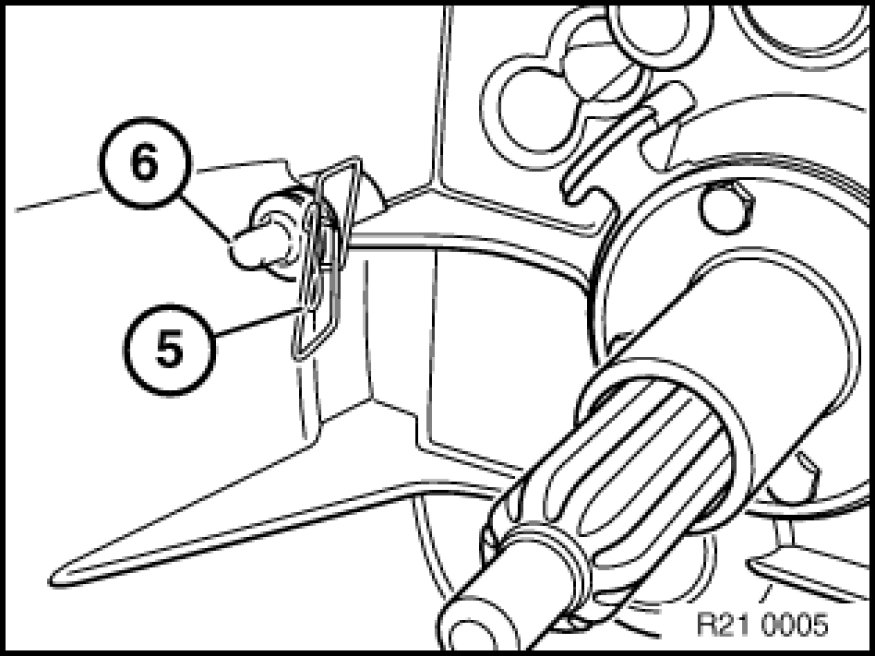
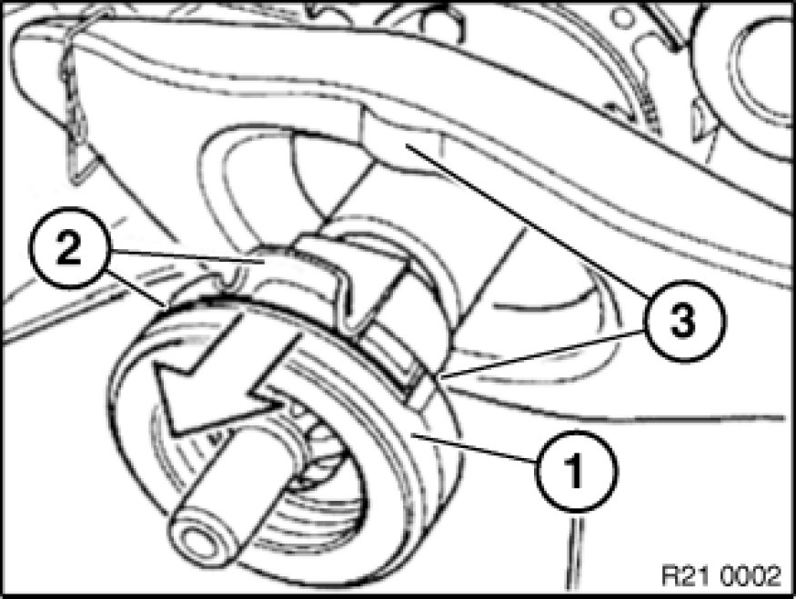
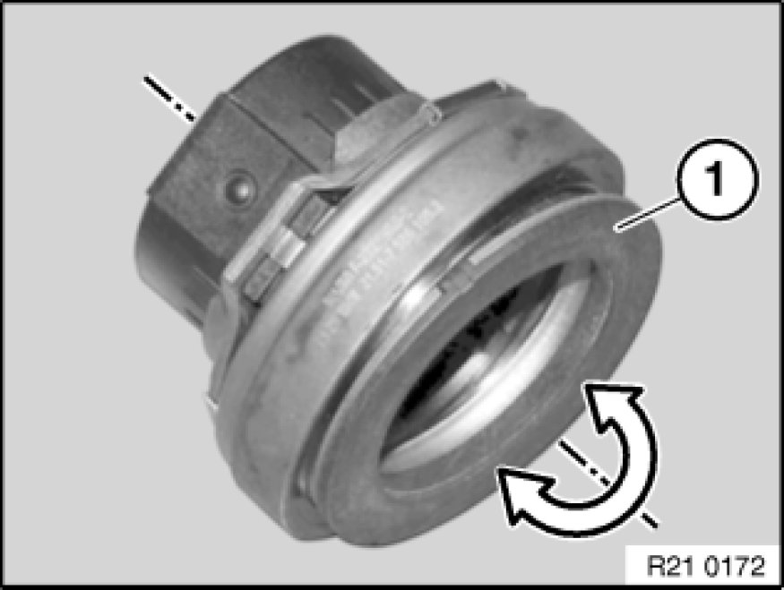
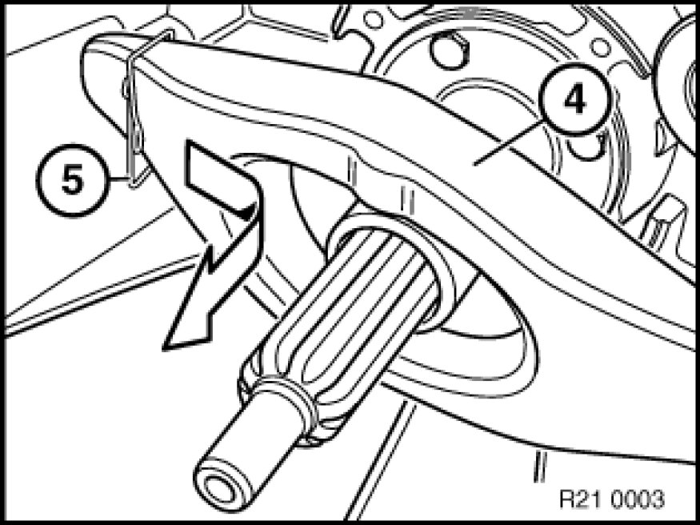
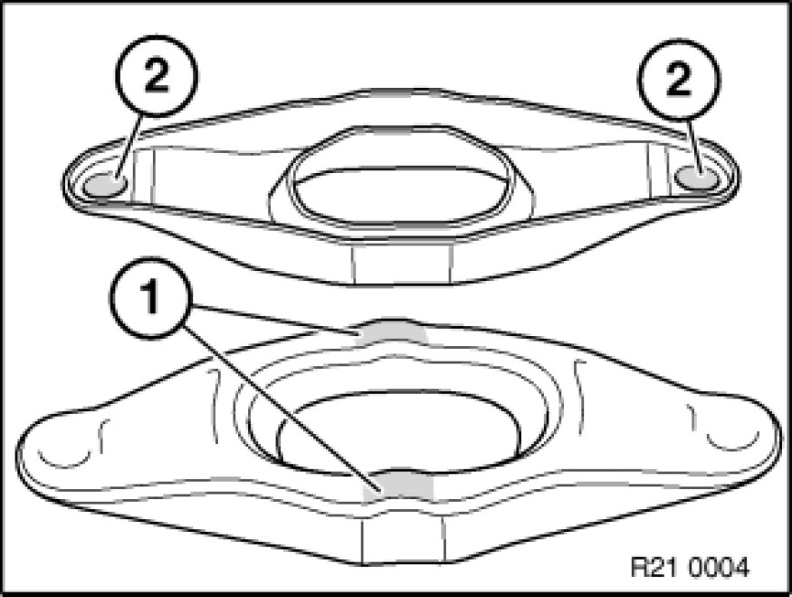
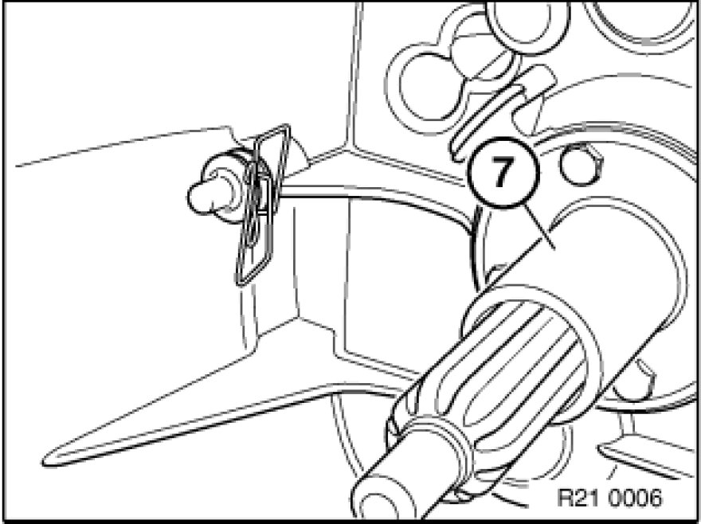

Clutch Release Bearing: Service and Repair
21 51 500 - Removing and installing or replacing clutch release bearing/lever
Note:
(transmission removed)

New version (except M models)
Release bearing and release lever have been combined to form a single release module.
If possible, do not disassemble the release module. Otherwise there is a risk of the release module being incorrectly reassembled.

Installation:
Make sure that the correct cam (1) of the release bearing is on the sliding surface (2) of the release lever.
The positioning in relation to each other is identified by white dots on the cam (1) and the sliding surface (2).
Note:
Do not grease sliding surfaces (2).

Fig. A: Cam (1) of release bearing (A=12 mm) is on sliding surface of release lever.
This version is for 4-cylinder petrol/gasoline engines.
Fig. B: Cam (1) of release bearing (A=7 mm) is on sliding surface of release lever.
This version is for 6-cylinder petrol/gasoline and diesel engines.

Remove release module (1) from spring wire clip.
Remove release module.
Note:
Illustration similar.

Installation:
Check spring wire clip (5) and ball pin (6) for damage and replace if necessary.
Note:
Illustration similar.

Previous version
Detach release bearing (1).
Installation Note:
Clean all sliding surfaces on clutch release bearing, check for damage and replace if necessary.
Do not grease clutch release bearing.
Sliding surfaces (2) of clutch release bearing must rest on sliding surfaces (3) of release lever.
Apply a thin coating of grease to sliding surfaces (2) of release bearing.
Grease, refer to BMW Service Operating Fluids.
Note:
Illustration similar

Important!
Only on E60/E61 M5 and E63/E64 M6 (7-speed SMG transmission) - lightly grease guide sleeve.

Previous clutch release bearing:
Clutch release bearing with moving thrust plate (1).
Swivel motion of thrust plate (1) possible.

Withdraw release lever (4) from spring wire clip (5) and remove.
Installation Note:
Clean release lever.
Note:
Illustration similar.

Previous release lever
Installation:
Apply a thin coating of grease to release lever at sliding surfaces (1 and 2) only.
Grease, refer to BMW Service Operating Fluids.
Installation Note:
Check spring wire clip (5) and ball pin (6) for damage and replace if necessary.
Apply a thin coating of grease to ball pin (6).
Grease, refer to BMW Service Operating Fluids.
Note:
The spring wire clip and ball pin must always be replaced on the S6S 420G transmission.
Illustration similar.

Clean guide sleeve (7).
Installation:
Except for E60/61 M5 and E63/64 M6 (7-speed SMG transmission) - do not grease guide sleeve.
If guide sleeve is greased, the release lever can stick on the guide sleeve.
Note:
Illustration similar.